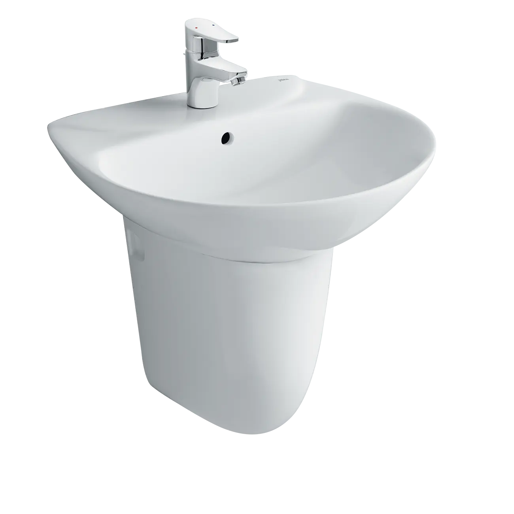
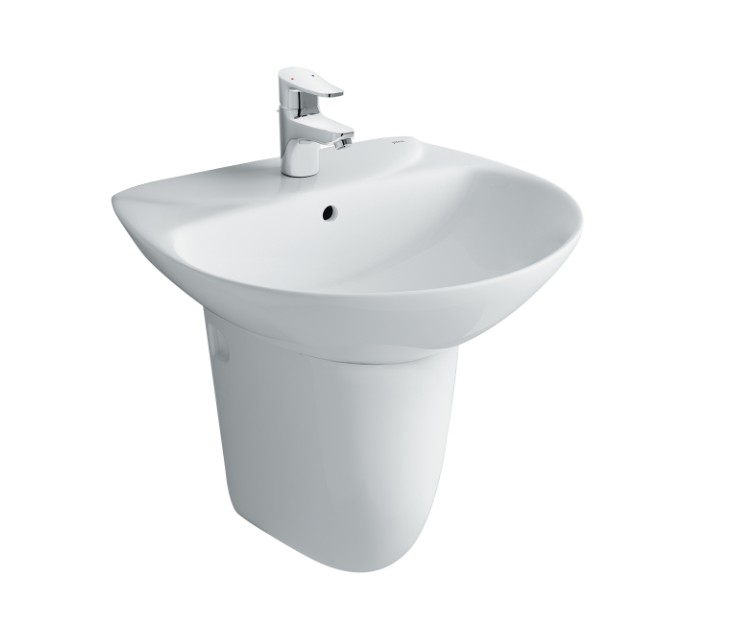

INAX L-288VC là mẫu chân chậu lavabo lửng (ngắn), được thiết kế tinh tế để lắp đặt gắn vào tường. Với kiểu dáng này, sản phẩm giúp tạo nên vẻ đẹp đồng bộ và tiết kiệm không gian đáng kể cho phòng tắm. Đặc biệt, chân chậu L-288VC được ví như một chiếc mặt nạ che đi khuyết điểm thẩm mỹ của bộ xả lavabo, giữ cho khu vực dưới chậu luôn gọn gàng và sạch sẽ.Thiết kế gọn gàng, hiện đại và tinh tếChân chậu treo tường dáng ngắn (L-288VC) sở hữu kiểu dáng bo tròn thuôn hiện đại, được thiết kế gọn gàng và gắn vào tường một cách tinh tế, giúp che đi khéo léo phần ống xả phía dưới mà vẫn giải phóng không gian sàn nhà.Về mặt chức năng, chân chậu không chỉ đóng vai trò chống đỡ cố định chắc chắn mà còn mang đến vẻ đẹp đồng bộ cho bộ chậu rửa, nâng cao tuổi thọ của hệ thống.Nhờ thiết kế tối giản, sản phẩm tạo nên điểm nhấn không gian sang trọng và đẳng cấp, làm tăng tính thẩm mỹ cho phòng tắm. Với tính năng đa năng, chân chậu ngắn này hoàn toàn có thể kết hợp với nhiều hình thức chậu rửa, đặc biệt là các dòng chậu rửa treo tường phổ biến như L-288V (EC/FC) và L-285V (EC/FC).Chân chậu rửa có kích thước lý tưởng 350 x 180 x 300 (mm), phù hợp với nhiều diện tích phòng tắm.Chất liệu sứ cao cấp, luôn sáng bóngChất liệu: Được làm từ men sứ cao cấp của INAX.Ưu điểm: Chất liệu này mang lại vẻ ngoài luôn sáng bóng, sạch sẽ và dễ dàng lau chùi, vệ sinh.Màu sắc: Màu Trắng tinh khiết.Lưu ýPhụ kiện kèm theo: Hộp sản phẩm bao gồm chân chậu, bộ ốc vít gắn tường.Sản phẩm gợi ý đi kèm: Chậu rửa treo tường L-288V (EC/FC) và L-285V (EC/FC).Video giới thiệu chậu rửa INAXBản vẽ lắp đặt chân chậu L-288VCXem chi tiết hướng dẫn lắp đặt tại đâyThông số kỹ thuật Chất liệuSứ cao cấpDạng sản phẩmChân chậu treo tườngKích thước350 x 180 x 300 (mm)Thiết kếTreo tường dáng ngắn, mang đến vẻ đẹp đồng bộ cho không gian phòng tắmThương hiệuINAXMàu sắcTrắngKhác- Dễ dàng kết hợp với chậu rửa treo tường L-288V (EC/FC) và L-285V (EC/FC) - Hotline tư vấn và bảo hành: 18006633
Chân chậu L-288VC L-288VC(chânchậu)
Chậu rửa thương hiệu INAX.
Đã cập nhật danh sách yêu thích.
DANH MỤC: Chậu rửa
MÃ SẢN PHẨM: L-288VC(chânchậu)
DEPTH: 460mm
HEIGHT: 546mm
WIDTH: 563mm
INAX L-288VC là mẫu chân chậu lavabo lửng (ngắn), được thiết kế tinh tế để lắp đặt gắn vào tường. Với kiểu dáng này, sản phẩm giúp tạo nên vẻ đẹp đồng bộ và tiết kiệm không gian đáng kể cho phòng tắm. Đặc biệt, chân chậu L-288VC được ví như một chiếc mặt nạ che đi khuyết điểm thẩm mỹ của bộ xả lavabo, giữ cho khu vực dưới chậu luôn gọn gàng và sạch sẽ.Thiết kế gọn gàng, hiện đại và tinh tếChân chậu treo tường dáng ngắn (L-288VC) sở hữu kiểu dáng bo tròn thuôn hiện đại, được thiết kế gọn gàng và gắn vào tường một cách tinh tế, giúp che đi khéo léo phần ống xả phía dưới mà vẫn giải phóng không gian sàn nhà.Về mặt chức năng, chân chậu không chỉ đóng vai trò chống đỡ cố định chắc chắn mà còn mang đến vẻ đẹp đồng bộ cho bộ chậu rửa, nâng cao tuổi thọ của hệ thống.Nhờ thiết kế tối giản, sản phẩm tạo nên điểm nhấn không gian sang trọng và đẳng cấp, làm tăng tính thẩm mỹ cho phòng tắm. Với tính năng đa năng, chân chậu ngắn này hoàn toàn có thể kết hợp với nhiều hình thức chậu rửa, đặc biệt là các dòng chậu rửa treo tường phổ biến như L-288V (EC/FC) và L-285V (EC/FC).Chân chậu rửa có kích thước lý tưởng 350 x 180 x 300 (mm), phù hợp với nhiều diện tích phòng tắm.Chất liệu sứ cao cấp, luôn sáng bóngChất liệu: Được làm từ men sứ cao cấp của INAX.Ưu điểm: Chất liệu này mang lại vẻ ngoài luôn sáng bóng, sạch sẽ và dễ dàng lau chùi, vệ sinh.Màu sắc: Màu Trắng tinh khiết.Lưu ýPhụ kiện kèm theo: Hộp sản phẩm bao gồm chân chậu, bộ ốc vít gắn tường.Sản phẩm gợi ý đi kèm: Chậu rửa treo tường L-288V (EC/FC) và L-285V (EC/FC).Video giới thiệu chậu rửa INAXBản vẽ lắp đặt chân chậu L-288VCXem chi tiết hướng dẫn lắp đặt tại đâyThông số kỹ thuật Chất liệuSứ cao cấpDạng sản phẩmChân chậu treo tườngKích thước350 x 180 x 300 (mm)Thiết kếTreo tường dáng ngắn, mang đến vẻ đẹp đồng bộ cho không gian phòng tắmThương hiệuINAXMàu sắcTrắngKhác- Dễ dàng kết hợp với chậu rửa treo tường L-288V (EC/FC) và L-285V (EC/FC) - Hotline tư vấn và bảo hành: 18006633
DANH MỤC: Chậu rửa
MÃ SẢN PHẨM: L-288VC(chânchậu)
DEPTH: 460mm
HEIGHT: 546mm
WIDTH: 563mm